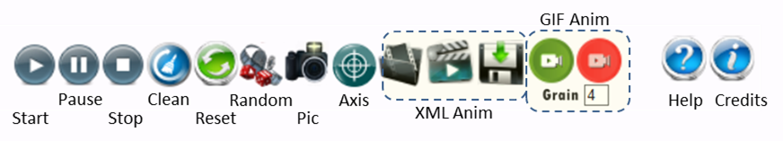

- A: Arm length
- P: Prop length
- θ: Current Arm Rotation Angle
- θ0: Initial Arm Rotation Angle
- ω: Current Prop Rotation Angle
- ω0: Initial Prop Rotation Angle
JuggleSpyro is a kind of Spyrograph for jugglers. The goal is to model Spins, Antispins, Hybrids, Extensions, Isolations in a single plane ...
The model used is the following:
|
|
|
The Prop is moving, the Arm also. If V is the circular speed, we have the following equations for both current angles at time t.

We then have the following equations for coordinates:
This tool offer 2 modes: one for a Single Hand View and one for Both Hands view. These are accessed through:
In the "Both Hands" View mode, only a single Main Clock is used for both hands. However hands Clock Beats are not necessarly synchronized. A full Clock represents 360° of rotation for each hand and basically on each Interrupt in Main Clock we draw the next degree of rotation. We then do a full tour in 360 Beats of Main Clock. The Hand Clock Speed indicates a deviation of degrees in animation for the given hand. We then may draw a hand with a higher/lower degree rotation on each interrupt. The more the Hand Clock Speed is, the less fluid the path will be.
The Following Prop Panel (one for each hand) is used to interact on the figure:
Beautiful Shapes, in general will need to set blurring and Color Filter. Unfortunatly it may take a lot of ressources and then slow down the whole animation. You will probably have to play with the clock, but the best solution will be to generate a resulting Animated GIF. This last one will not suffer from such issue since the animation computation is not in real time.
If the Ratio is negative, we then have an antispin, otherwise this is a spin. Mathematically Spins are Epicycloid curves (Ratio = 1=>Cardioid ...) and Antispins are Hypocycloid curves (Ratio = -3=>Deltoid ...).
With some specific ratio between Arm size and Prop size we have some interesting curves. For example when the Arm Length is 3 times longer than the Prop, with ratio -4 we have an Astroid and with ratio 2, a Nephroid drawn by the end of the prop:
Another Panel at the left bottom will permit to operate on some global settings:
Hereafter we have the Action Panel. This may be slightly different for both View Modes:
In "Both Hands" View Mode, this looks like:

After, classical "Start", "Pause", "Stop", "Clean", "Reset", buttons we have a Random Mode Button. This button will run a Random Animation forever playing on Ratio, Arm Angle, Prop Angle and Arm Way Nb Loops. It will also random on Nb Loops using however the same value on both hands. You still have a hand on other aspects of Animation, such as prop, colors ...
The Pic button will generate a PNG image of the current animation. The Axis Button will recenter Both axis.
Next 3 buttons will concern the "XML Animation" Mode. This mode allow the sequencing of several configurations. We will name these different configurations "Animations" and "Scenarios" and "Scenes". First button permits to choose an "XML Animation" File; second runs the Animation, third gives XML related configuration for the whole animation (if it's in "Animation Running" otherwise the current configuration is delivered).
The Videos buttons permit to generate an animated GIF. Just Record and Render when finished. The Grain gives how many Main Clock Beats will be done between 2 Consecutives Snapshot for building the Animated GIF. The Viewing framerate has not impact on the Video. Between every GIF Snapshot a delay of 60ms is applied per default according to the default setting in the application. Use it by yourself if you want to interact on this. It also means that pause, stop have no impact on the resulting framerate.
An XML Animation may be used to describe and store a Spinning Flow. It thus permits to visualize and replay it very easily.
An Animation is a combination of one or several Scenarios that is itself a combination of one or several scenes.
All the configuration has to be defined in an XML File according to the following syntax:
For each hand in each Scene, you may set different parameters that correspond to the ones you may find in both Props Panels.
Some special parameters not available in the interface are also provided:
You also have a global Setting for both hands with:
Again, some special parameters not available in the interface are also provided:
You may also define the Number of Loops for:
If needed, it may be defined as hereafter:
With XML Animation files you also may inject specific values not handled in Gui for parameters. We especially think to limitations in sliders ranges for example.
If a parameter is not defined in a Scene, the previous value is used; or the default one if none has been defined previously. Nevertheless you have to fill at least "nbloops" for both hands in any scene. A file "demo.xml" is provided by default as an example. You can get the current scene configuration by clicking on the floppy icon or the Animation configuration one if XML Animation is running.
Here are some examples generated in Animated GIF:

Here are some XML Files for Demonstration purpose:
Enjoy !
Frédéric Roudaut